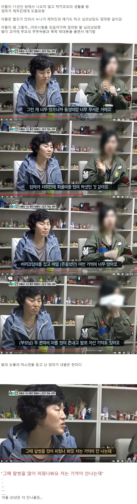

아들이 11년간 방에서 나오지 않은 이유.jpg
댓글
아줌마 심술관상은 틀리는법이 없네
늘그막에 자식들한테 버려져서 비참하게 살다 뒈지는거지 뭐
멀 ㅋ 난 고데기로 지짐당했는데
그래서 그렇게..
저 집 가장노릇 하는 누나가 제일 불쌍함... 하루빨리 탈출하셨으면
일단 탈출도 힘들듯 혼자 책임감있음..
연을 끊어야
나르부모
왜 안나오는지 알거같노 ㅋㅋㅋㅋㅋㅋㅋㅋㅋㅋㅋㅋㅋㅋ
막짤....ㄷㄷㄷㄷ
나도 초3때 수학성적 미 나왔다고 개패듯이 존나 쳐맞음
그후로 아빠랑 말도 잘안하고 공부도 손놓고 놀러다녓는대 ㅋㅋㅋㅋ
관상 ㅅㅂ
아줌마 표정이 :( 이런상태에서 턱주가리 대빨 나와있으면 과학임
싸이언스 맞습니다
누나한테 답안지를 주자면
동생 끌고나와서 독립하는거임
진짜임...
분명히 본인이 한 거 다 기억하고 있는데 인정 못해서 기억 안 난다고 할 거다
본인 스트레스를 자식한테 푸는 인간들 중에 말년에 대접 받는 사람 없다
어떤 때는 돈도안번다고 욕하고 어떤때는 부모가 잘못이라고 하고